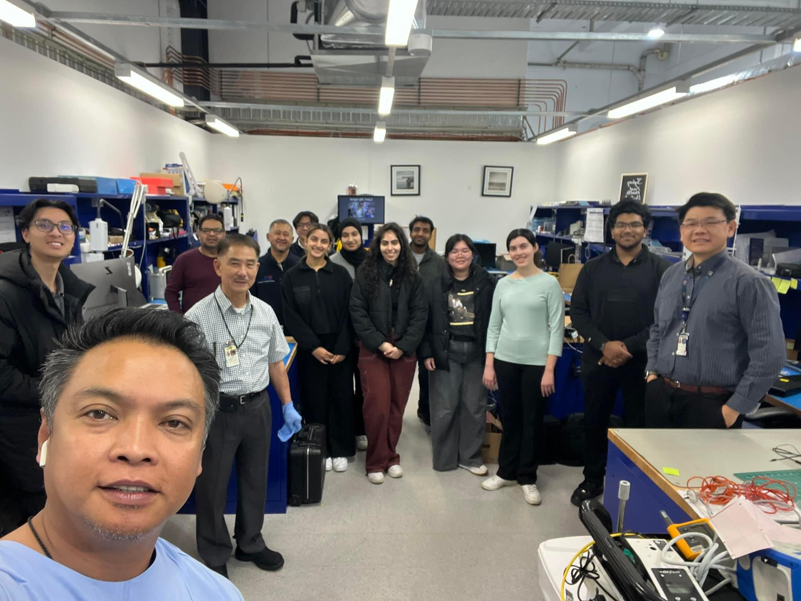

Sydney Local Health District
Biomedical Engineering · Sydney Local Health District
Read more
My contribution
Returning to RPA as a Biomedical Engineering Technician marked an important step from being supervised as an intern to taking greater ownership of my work. I independently perform preventative maintenance, electrical safety testing and functional verification, diagnose and resolve equipment faults, and confirm devices are safe before returning them to clinical use. I also respond to faults from clinical areas including the Emergency Department and contribute to service documentation, asset management and equipment coordination.
What I enjoy most is the direct connection between the technical work I do and the healthcare environment it supports. There is a real sense of responsibility in troubleshooting equipment that clinicians rely on and knowing that the quality of my work contributes to its safety, reliability and availability for patient care. This experience has strengthened my technical judgement and confidence, while deepening my passion for medical technology and my goal of bringing this clinical perspective into a career in medical-device R&D.
